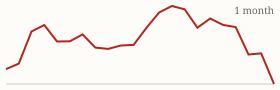

| Today's briefing for operators |
Top line: Sun Belt inventory surges while the Midwest stays tight |
|
| Monday, October 19, 2026 | Late Edition | Curated from 63 voices on X |
|
Real Estate
Sun Belt Housing Inventory Surges as the Midwest Stays Short
Nashville now has more homes listed for sale than metro Detroit, a market that had about twice as many before the pandemic.
By @nickgerli1 |
Nick Gerli's chart of housing inventory by metro. Image via @nickgerli1 on X |
Housing analyst Nick Gerli says a major shift has taken place in the U.S. market: Sun Belt metros are seeing a big jump in homes for sale, while many Midwest markets still don't have enough. In a follow-up post he puts numbers on it, with about 12,200 metro listings in Nashville against about 12,100 in Detroit. |
For operators, more inventory usually means longer days on market, more motivated sellers and buyers who can be pickier. That changes how hard to negotiate on the buy side and how conservative to be on resale assumptions and exit timelines. |
|
| Read on X |
|
Mortgage Rates & Markets |
Mortgage Rates Today's average lender rates | 30-year fixed | 7.37% | +0.04 | | 15-year fixed | 7.04% | +0.06 |
Daily change vs. prior day. Source: Mortgage News Daily, as of 10/16/2026 (updated weekdays about 4 PM ET). |
|
S&P 500 Close of Fri, Oct 16 (markets closed since; last close shown) S&P 500 7,659.44 ▼ -84.62 (-1.09%)  Yahoo Finance chart data (daily closes) |
|
Nasdaq Composite Close of Fri, Oct 16 (markets closed since; last close shown) Nasdaq Composite 26,140.03 ▼ -573.00 (-2.15%)  Yahoo Finance chart data (daily closes) |
|
|
Real Estate & Deals |
The Building Can Be Worth More Than the Business By @ChrisRamsey60 Chris Ramsey points to a 30-year operating business whose building is now worth more than the entire operation. His lesson is to own the real estate your business sits on. Read on X |
A $57K Lien on a $55K Contract By @NickMaccini Nick Maccini's title search on a $55K deal turned up a $57K lien from a past lawsuit. Deals die late, so his rule is to keep marketing no matter what's under contract. Read on X |
New to Deals? Start On-Market By @PaceJordanMorby Pace Morby says beginners should start with on-market sellers who already want out. You aren't convincing anyone to sell, you're solving the problem their agent couldn't. Read on X |
Operate the Asset or Go LP? By @Jacob_Naviaux Jacob Naviaux asks operators earning $1M a year whether to build their own cash-flowing portfolio or invest passively in someone else's deal. Running it yourself pays more but costs time and focus. Read on X |
|
AI Briefing |
DeepSeek's V4.1 Flash announcement graphic. Image via @deepseek_ai on X DeepSeek Ships a Faster, Cheaper V4.1 Flash By @deepseek_ai DeepSeek-V4.1-Flash-1017 is live on its website, app and API, with stronger benchmark scores, faster task completion and shorter answers than the last version. Read on X |
Video still from OpenAI's on-call demo. Image via @OpenAIDevs on X OpenAI's Agent Handles a 3 A.M. Incident By @OpenAIDevs An OpenAI engineer let his ChatGPT agent investigate an on-call problem overnight and start a Codex coding thread, then steered the fix from his phone. Read on X |
Claude for Thinking, Codex for Features By @alliekmiller Allie K. Miller says Claude leads on model quality while OpenAI's Codex leads on features like live voice, computer use and image generation, and she'd trade a little quality for those. Read on X |
Who Is Liable When an AI Agent Acts? By @PeterDiamandis Peter Diamandis says agent identity, ownership, liability and credit history are all unbuilt pieces of infrastructure, comparing the moment to the internet in 1994. Read on X |
Nine AI Skills to Learn First By @Sabrina_Ramonov Sabrina Ramonov's new short video lays out the nine AI skills she'd start with if you're building your AI toolkit. Read on X |
|
Business & Leadership |
Selling Your Business? Take Cash, Not an Earn-Out By @levelsio Founder Pieter Levels (@levelsio) says to never agree to an earn-out when you sell a company and to get paid in cash. He says he's heard many earn-out horror stories. Read on X |
Being Small Is a Competitive Advantage By @ChrisRamsey60 Bigger competitors have more money and name recognition, but also more overhead and layers of approval. A small company can decide and move the same day. Read on X |
Big Goals Have Less Competition By @danmartell Dan Martell argues most people play it "realistic," which makes that the most crowded and exhausting game to win. Bigger targets face far fewer rivals. Read on X |
|
The Hyre Times is compiled each morning by Groky from public posts on X plus public rate and market data. Summaries reflect the authors' own claims and have not been independently verified. Not financial advice. © 2026 Hyre Times. |